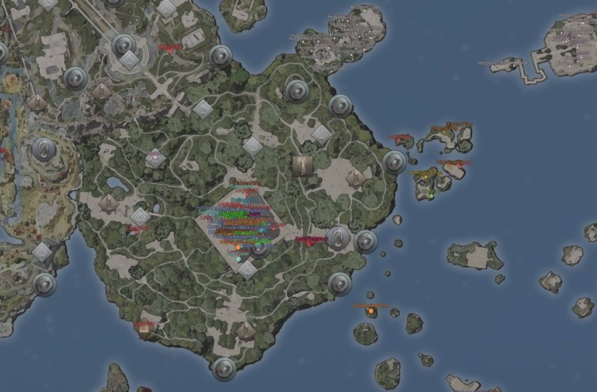
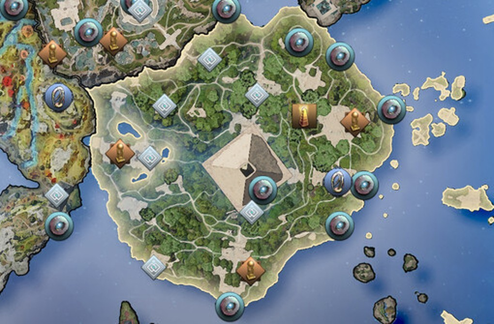

01The problem
An addon for Islands of Insight
Find the puzzles you missed, without leaving the game.
Puzzle filters on the world map and a compass in your HUD, read live from your progress.


02The idea
Put that map inside the game
Tick the puzzle types you're missing and they're pinned on the world map. Solve one and its pin is gone.
03On the move
A compass that follows you
Close the map and the ticked types stay with you, with marks for above or below and your own markers on the rim.
04The hard parts
Labyrinths and Pentads
Inside a Crystal Labyrinth the compass draws the floor you're on. Start a Hidden Pentad and it shows just the relics left.
05How I made it
I played every build; AI agents wrote the code
My part was the questions, the design and the testing in game.
How the agents generate the mod
Islands of Insight · Windows · Offline Restored Mod v1.6
One mod file in the game's Paks folder. Remove it and the game's exactly as it was.